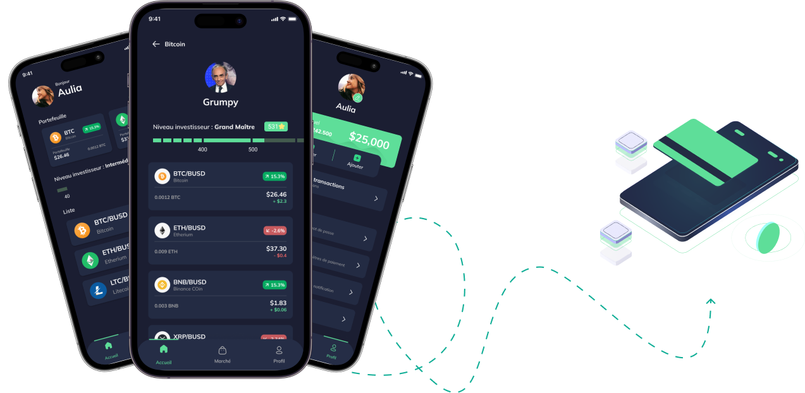
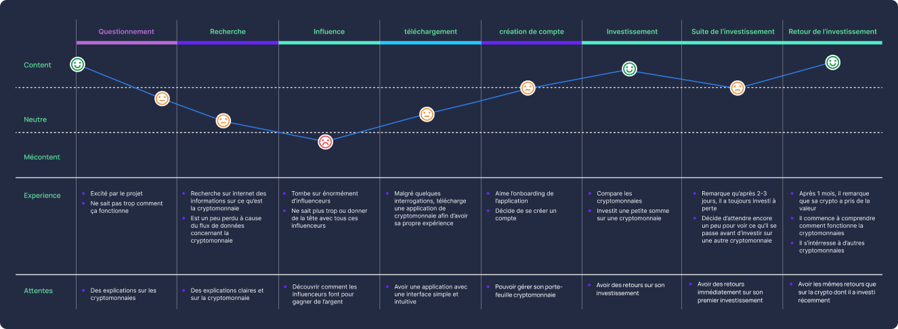
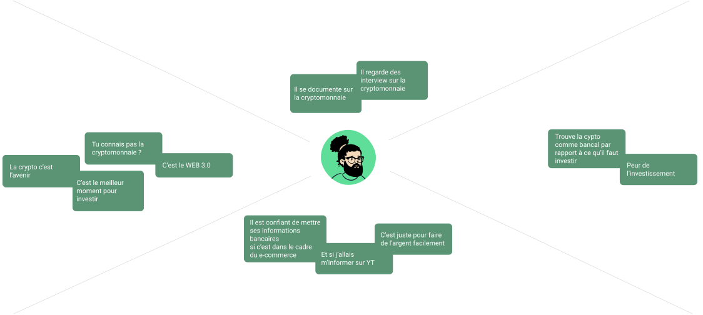

Le processus que j'ai suivi pour ce projet a été d'identifier le problème, de faire preuve d'empathie et de compréhension, de définir le problème, d'imaginer des solutions et de les traduire en conceptions, prototypes et tests si nécessaire.

Le processus que j'ai suivi est de refaire une journée type d'un utilisateur ou futur utilisateur de l'application Wisecrypto en mettant en avant les points positifs et négatifs lors de la journée type de l'utilisateur
Le processus que j'ai suivi est d'interroger une ou des personnes afin de connaitre leur affinité avec la cryptomonnaie, ce qu'elles en pensent ainsi que ce qu'ils retiennent des l'expérience de la cryptomonnaie si ils en ont eu.
